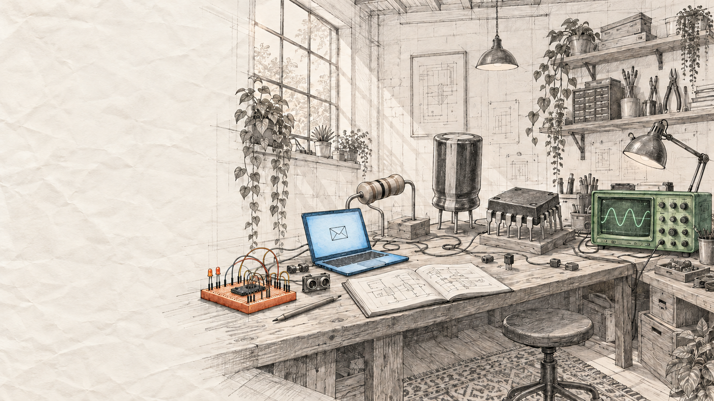

+CIRCUITS, CODE & CURIOSITY
Hi, I'm Xuewen.
Welcome to
my little lab.
Electronic & Electrical Engineering
at City University of Hong Kong.
Learning by making things.
A few things I've made(03)
a mix of circuits, code & curiosity ↙Built with curiosity, iteration, and a little help from AI.GitHub ↗
A LITTLE ABOUT ME
An engineer in the making.
A problem-finder by habit.
I'm Xuewen Wang, a second-year Electronic and Electrical Engineering student at City University of Hong Kong. I enjoy turning an everyday frustration into something I can build, test and improve.
I use Codex to help develop my projects, while shaping requirements, refining the experience and checking how the prototypes behave. I'm looking for a first technical or product-focused internship where I can learn by doing.
- EDUCATION
- BEng, Electronic and Electrical EngineeringCity University of Hong Kong · 2025–2029
- ACADEMIC
- 3.65 / 4.3 GPA · Dean's List, Semester B 2025/26
WORKING WITH
Python / C++ / MicroPython / Micro:bit / Codex